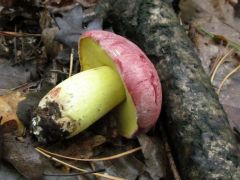
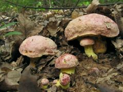
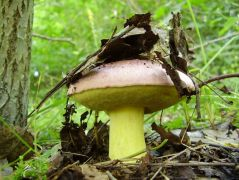

Király vargánya
 Ehető
Ehető
Kalap: 5-20 cm széles, rózsás, kárminvörös, idősen kifakulhat, felülete nemezes, majd csupasz.
Termőréteg: aranysárga, majd olívszínű, nyomásra nem kékül.
Tönk: sárgás, néha kárminpiros foltokkal, felülete finoman hálózatos.
Hús: sárga, csak gyengén kékülhet.
Előfordulás: júniustól októberig, savanyú talajú lomberdőkben, nálunk elég ritka.
Étkezési érték: ehető, színpompás gomba, de ritkasága miatt kímélendő! (!!!)


